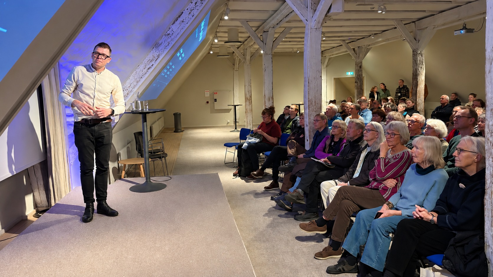

Et forsvundet Grønland
Opdagelsen af to millioner år gammelt DNA og de planter og dyr, der engang levede i et langt varmere Grønland.
Forsker og foredragsholder
Hvordan kan en håndfuld jord afsløre et helt forsvundet økosystem? Jeg fortæller om opdagelserne, feltarbejdet og de videnskabelige spørgsmål bag forskningen i gammelt miljø-DNA.

Mine foredrag spænder fra formidling til et bredt publikum til faglige oplæg på konferencer og tager udgangspunkt i forskningen i fortidens natur.
Opdagelsen af to millioner år gammelt DNA og de planter og dyr, der engang levede i et langt varmere Grønland.
Hvordan DNA overlever i jord og søsedimenter, hvordan vi finder det, og hvad det kan fortælle om økosystemer, der ikke længere findes.
Hvad gammelt miljø-DNA afslører om samspillet mellem menneskers aktiviteter, klimaforandringer og biodiversitet gennem tiden.
Eksempler på offentlige foredrag, inviterede oplæg og keynotes på konferencer.
Arktisk Festival · København · 1. november 2026
Offentligt foredrag
International Conference on Palaeogenomics · Stockholm · 24. juni 2026
Keynote
Universitetet i Wien · 7. november 2025
Inviteret oplæg
Kaamos Symposium · Universitetet i Oulu · 4. december 2024
Keynote
Kultursalonerne Gisselfeld · Gisselfeld Kloster · 20. august 2022
Offentligt foredrag
Kultursalonerne Gisselfeld · Gisselfeld Kloster · 7. august 2021
Offentligt foredrag
Vin & Videnskab · København · 7. november 2018
Offentligt foredrag
Skriv gerne lidt om arrangementet, publikum, det ønskede emne, dato og sted. Så kan vi aftale formatet og de praktiske rammer.